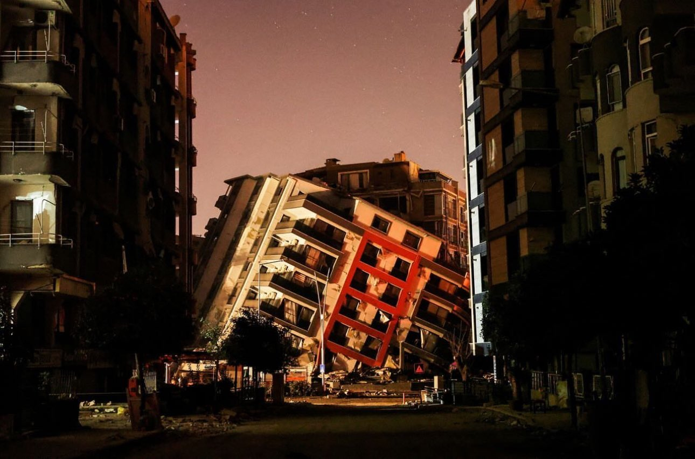
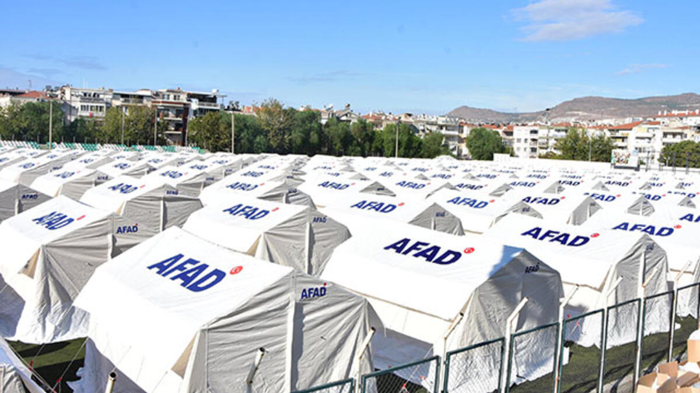

Hatay' Tanıyalım
Hatay, tarihi zenginlikleri, kültürel mirası ve nefis lezzetleriyle dolu
bir şehir. Türkiye'nin güneyinde, Akdeniz'in kıyısında yer alan bu güzel
şehir, her adımda geçmişin izlerini taşıyor. Hatay'ı keşfetmek, sadece
bir gezi değil, zaman içinde yolculuk yapmak gibidir. İşte Hatay'ın
benzersiz güzelliklerini keşfetmek için yapabileceğiniz bazı şeyler.
Ne zaman kuruldu?
Dünya Savaşı´ndan sonra Fransızlar tarafından işgal edilen bölge, 18
yıl Fransızların egemenliğinde kalmıştır. Yayladağı, 1938'de kurulan
Hatay Devleti sınırları içine kaldı. Hatay Devleti´nin de
7 Temmuz 1939'da Anavatana katılmasıyla, Türkiye sınırlarına dâhil
oldu.
Kültürü nereden geliyor?
1200'le başlayan Genç Hitit prenslikleri dönemine tarihlenmektedir.
Bu dönemde, Amik Ovası´ndaki Hitit Prenslikleri'nin birleşerek
Hattena Krallığı adını aldıkları bilinmekte, Hatay adının da buradan
geldiği sanılmaktadır.
Yöreye bu adı 1936'da Atatürk vermiştir.
Nereleri gezmelisiniz?
Hatay Arkeoloji Müzesi. ... Vakıflı Köyü ... Harbiye Şelaleleri. ...
St. ... İskenderun Deniz Müzesi. ... Hatay Uzun Çarşı ... Sokullu
Mehmet Paşa Külliyesi. ... Cin Kulesi vb. yerleri gezmenizi
öneririz. Türkiye'nin en büyük mozaik müzesi olan Hatay Arkeoloji Müzesi'dir
Bizim Gözümüzden
Onca tarihe eve sahipliği bir yer için elimden gelen sadece bunları bir
web sitesine aktarmak oldu.
ÜZÜNTÜ
Depremlerin yol açtığı acı ve kayıplar, insanların dayanışma ve yardımlaşma içgüdüsünü ortaya çıkarsa da, bu tür olaylar her zaman üzüntü dolu bir gerçeklik taşır.

KADER
Hatay'daki deprem, insanların kaderi üzerinde etkileyici bir iz bıraktı. Doğanın gücü karşısında yaşanan bu olay, insanların kaderini bir anda değiştirdi.

NEDEN?
Şimdiye kadar kayıtlara geçmiş 30 depremin yaşandığı Hatay'da, bunlardan yedisi şehrin tamamen yıkılmasına neden olmuş. Dolayısıyla 6 Şubat depremleri ile Hatay'ın 8. kere yıkıldığı ifade ediliyor.